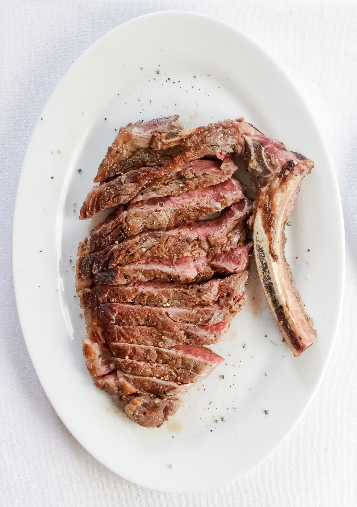

Teriyaki Ribeye

Japanese teriyaki marinated ribeye steak
Ingredients
- 2 tablespoons soy sauce
- 2 tablespoons water
- 1 tablespoon white sugar
- 1 1/2 teaspoons honey
- 1 1/2 teaspoons Worcestershire sauce
- 1 1/4 teaspoons distilled white vinegar
- 1 teaspoon olive oil
- 1/4 teaspoon onion powder
- 1/4 teaspoon garlic powder
- 1/8 teaspoon ground ginger
- 2 6oz. rib eye steaks
Directions
-
Whisk together the soy sauce, water, sugar, honey, worcestershire sauce, vinegar, olive oil, onion powder, garlic powder, ground ginger in a large bowl
-
Marinate steaks in sauce mixture for at least 2 hours
-
Cook steaks to 135 degrees celsius